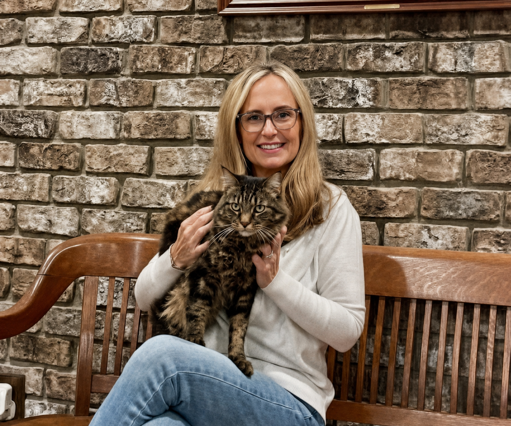

Working for District 4
Years Before the Ballot
I've been working for Putnam County and fighting for taxpayers long before I ever decided to run for office. I will continue to be your voice for fiscal responsibility, transparency, and accountability.
Holding Government Accountable
When the Development Authority bypassed elected officials to pursue a rejected deal, Jennifer joined Erin Olson and Commissioner Steve Hersey in Superior Court to challenge a 15-year tax abatement. This effort, featured twice on Atlanta's 11Alive News, resulted in a court-ordered audit—a major victory for transparency. Jennifer remains committed to ensuring taxpayers have a voice wherever important decisions affecting our community are made.
Protecting Taxpayer Dollars
Concerned that Waste Management costs appeared disproportionate for a county our size, Jennifer submitted Open Records requests that uncovered inefficiencies and inconsistent bookkeeping. Her research brought greater public attention to more than $2 million in annual Waste Management expenses and the importance of stronger financial oversight and accountability. Jennifer believes taxpayers deserve transparent financial management and careful stewardship of every public dollar.
Roads & Transportation
Residents deserve transportation infrastructure that is safe, reliable, and properly maintained. Jennifer has repeatedly spoken before the Board of Commissioners, personally documented deteriorating roads and unsafe or illegible traffic signs, submitted requests for needed repairs and replacements, and used Open Records requests and independent research to hold local government accountable. She believes our roads should be improved through responsible financial planning that protects taxpayers while delivering the infrastructure our growing community needs.
Protecting Our Community
When the proposed District 4 quarry first came to light, Jennifer broke the story on January 31, 2026, through the Taxpayer's Watchdog Group – Putnam County, GA Facebook page, which she co-founded. She immediately began researching every aspect of the proposal. Since then, she has devoted hundreds of hours to reviewing thousands of pages of documents and public records, working with more than two dozen government agencies, organizations, and subject matter experts, and collaborating with the official STOP the Rock Quarry team and other community members to examine the developer's claims, identify unanswered questions, and provide citizens with the factual, documented information needed to evaluate the proposal. Jennifer believes rezoning this property for a heavy industrial quarry is not appropriate given its proximity to Lake Sinclair, neighboring homes, working farms, and surrounding natural resources. Her submitted comments were included in the official Middle Georgia Regional Commission Development of Regional Impact (DRI) final report, where she was specifically identified as a concerned citizen.
Jennifer also recognizes and thanks the official STOP the Rock Quarry team for their tireless dedication and leadership. While balancing campaign responsibilities, she has been honored to work alongside a committed group of citizens whose unwavering dedication has helped keep our community informed, organized, and engaged throughout this effort. Their commitment to protecting Putnam County continues to inspire others and demonstrates what citizens can accomplish when they work together.

This and more has been coming from Jennifer's home office long before there was an empty seat at the Board of Commissioners' table.
What Jennifer Stands For
Focusing on What Matters
Fiscal Responsibility
I will continue to fight for responsible budgeting and protecting your hard-earned tax dollars.
Transparency & Accountability
Government works for you. I will keep demanding openness, honesty, and answers.
Responsible Growth
Smart growth that preserves our quality of life, protects our land, and strengthens our future.
Protecting Property Owners
I will continue to stand up for property rights and fight against overreach and unfair assessments.
Real Job Creation
Attracting diverse industries so our children can build their careers—and their families—right here at home.
Smart Managed Growth
Protecting our rural landscapes with sustainable, infrastructure-ready development—roads resurfaced, traffic studies done, neighborhood quality of life prioritized.
Strategic Partnerships
It's time to cut the red tape. We need a government that acts as a partner to those ready to invest in our county.
Honest, Transparent Leadership
Restoring faith in local government with open doors and accountability.
Preserving Our Lakes & Waterways
Bringing overdue focus to the erosion and invasive growth threatening our coves, and prioritizing the health of our lakefront communities.
The District 4 Quarry
Actively engaging stakeholders to protect our neighborhoods' safety and property values.
Putnam County is more than where I live — it's who I am.
Meet Jennifer
Choosing Putnam: Homegrown Integrity
Professional Expertise
A Customer Solutions Specialist for a Fortune 100 company, Jennifer manages multi-million-dollar portfolios for major big-box and regional retailers. She brings the analytical rigor needed to audit systems for waste and streamline for efficiency. With a degree in Political Science and Communications and post-graduate work in Supply Chain Management from Embry-Riddle, Jennifer offers the operational expertise required to manage Putnam County's infrastructure and budgets effectively.

Putnam County Has Been My Home for 23 Years
I moved to Georgia in 2002, and it was the best decision of my life. This is where I met my husband, Charles Ray—a Georgia native—and where we started our life together in a modest cottage on Burtom Road. Over the years we've built a warm, lively home filled with love, and shared with our four pets; Elsa, Dexter, Dash and Squirt. I have spent more of my adult life here than anywhere else. While I wasn't born in Georgia, I have made a conscious, heartfelt choice to call Putnam County my home every single day for over two decades.

Rooted in a Community of Hard-Working Families
My story begins in the small lakeside hamlet of Sandy Pond, just an hour and a half from the Canadian border. Growing up there, I learned early that in a close-knit community, your neighbors are your lifeline.
Our town was defined by the quiet strength of the lake, hard-working farms, and citizens navigating life's daily grind. I grew up surrounded by families who knew the value of a hard day's work and the importance of looking out for one another. Whether it was a neighbor stopping by with a helping hand when someone was under the weather or a community coming together to support our youth, we knew that we were stronger together.

The Backbone of My Work Ethic
My father was the backbone of that same work ethic. He was a stone mason and contractor who built the homes our neighbors lived in. When he wasn't on a job site, he was a small business owner chartering fishing trips on Lake Ontario and the Salmon River, or outfitting hunting expeditions for caribou, elk, and bear.
Life was not always easy, but it taught me a vital lesson: true perseverance is born from challenge. Growing up in a household supported by seasonal work, life was often "feast or famine." I saw firsthand the discipline it takes to make the "feast" last and the drive required to keep a business running. My dad taught me that a person's word is their bond, that you build things to last from the foundation up, and that "good enough" never is.
A Vision for All of Putnam County
I am running for County Commissioner because I believe these values—fiscal responsibility, neighbor helping neighbor, and common-sense integrity—are exactly what we need to protect Putnam's future.
I understand the challenges our residents face—from the families working to keep their small businesses open to the neighbors navigating life's daily grind. They deserve a leader who understands that every tax dollar was earned through someone's hard work.
I have chosen this county for 23 years, and I am ready to bring the same drive that fueled my father's business and the perseverance I learned in those "feast or famine" years directly to the Administration Building. I will bring a "foundation-first" precision to our budget and maintain a tireless commitment to the families of this community.